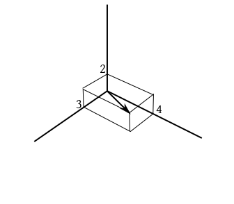
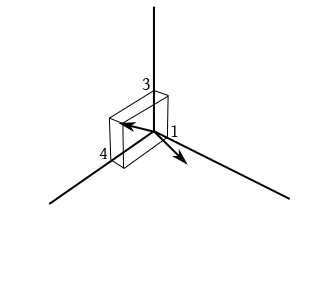
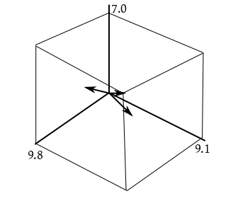
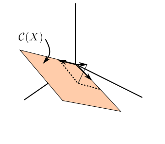
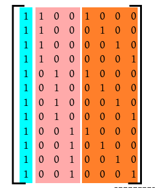
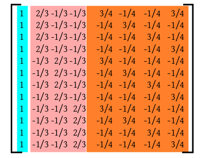
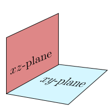

Pictorially, this means
projecting $\v y$ on $\col(X)$ and expressing the
projection ($\hv y,$ the foot of the perpendicular) in
terms of the columns of $X.$
For example, in the weighing case, we are looking for $a,b$
such that $X \beta $ is as close as possible to $y.$
Now
$$
X \beta = \left[\begin{array}{ccccccccccc}3 & 4\\4 & 1\\2 & 3
\end{array}\right]\left[\begin{array}{ccccccccccc}a\\b
\end{array}\right] =
a \left[\begin{array}{ccccccccccc}3\\4\\2
\end{array}\right] + b \left[\begin{array}{ccccccccccc}4\\1\\3
\end{array}\right],
$$
a linear combination of the two columns of $X.$ So our
interest lies in finding the linear combination of the columns of
X that is closest to $\v y.$ We shall proceed step by step
here.
Start by thinking of the first column of $X$ as an arrow in ${\mathbb R}^3:$

Similarly for the second column:

The $\v y$ vector is also an arrow in ${\mathbb R}^3:$

Our job is to drop a perpendicular from the tip of $\v y$
on the plane $\col(X).$ That is,
we want to find some $\hv \beta $ such that $X\hv
\beta $ is the projection of $\v y$ onto $\col(X):$

This may be done by the following mathematical trick: Just
solve the so called normal equation:
$$
(X'X)\hv \beta = X'\v y.
$$
We shall not worry about why this trick works right now. We shall
prove this later. Then we shall also prove the useful fact that this system is
always consistent.
The foot of the perpendicular (from $\v y$
to $\col(X)$) is $\hv y$, and is unique. Since this is
in $\col(X),$ so it can be expressed as a linear combination
of the columns of $X.$ However, there may be many ways to do
so. It will be unique if and only if the columns of $X$ are
all independent.
Thus, the projection of $\v y$ onto $\col(X)$ is
$$\hv y = X\hv \beta = \underbrace{X(X'X)^{-1} X'}_{P_X} \v y.$$
So $P_X = X(X'X)^{-1} X' $ is the (orthogonal) projection
matrix for $\col(X).$
Recall from linear algebra that a real matrix is an orthogonal
projection matrix if and only if it is symmetric and idempotent.
EXERCISE: Quickly check that $P_X$ is indeed symmetric and
orthogonal.
Here the design matrix is like
$$
X = \left[\begin{array}{ccccccccccc}
\o & \o & 0 & 0\\
\o & 0 & \o & 0\\
\o & 0 & 0 & \o\\
\end{array}\right],
$$
where $\o = (1,1,1,1,1)'.$ The sum of the last three columns
equals the first, and so $\col(X)$ has dimension $3.$
We split $\col(X)$ into two orthogonal parts. To understand
this let $V_1$
and $V_2,$ where $V_1$ is just the span of the first
column, and $V_2$ is the span of the last
three. Clearly, $\col(X) = V_1+V_2.$ However, there is an
overlap. So we replace $V_2$ by $W = V_2\cap
V_1^\perp.$ Now consider $y\in{\mathbb R}^{15}.$ We have
effectively split ${\mathbb R}^{15}$ into three orthogonal parts:
$$
{\mathbb R}^{15} = V_1 + W_2 + \col(X)^\perp.
$$
Accordinly $y$ gets split as
$$
y = y_{V_1} + y_{W_2} + y_{\col(X)^\perp}.
$$
Here $y_{S}$ means orthogonal projection of $y$ onto $S.$
A little computation would show that the squared norms of these
are the $SS$'s in our ANOVA table. The degrees of freedom
are just the dimension of the subspace we are projecting into.
The situation is as depicted below:
This idea is very tempting. Just split $\col(X)$ into
mutually orthogonal subspaces corresponding to the inputs. The
subspace $\col(X)^\perp$ will correspond to the random error
input.
However tempting this idea may sound, it is not achievable in
many situations. We shall illustrate both the cases, where it is
possible, and where it is not.
EXAMPLE:
Consider the 2-way ANOVA model without interaction:
$$
y_{ij} = \mu + \alpha_i + \beta_j + \epsilon_{ij},
$$
where $i=1,2,3$ and $j=1,...,4.$ The design matrix
is $X$ given by

We have grouped the columns according to effects. The cyan
column in the overall mean effect, the pink ones are
the $\alpha$ columns, and the orange ones are due to
the $\beta$'s. If we denote the spans of the cyan, pink and
orange columns by $V_1, V_2$ and $V_3,$ respectively,
then
$$
\col(X) = V_1 + V_2 + V_3.
$$
However, they are not mutually orthogonal. Indeed, $V_2\cap V_3
= V_1.$ However, something nice is true: once you
"remove" this intersection, the remaining parts of $V_2$
and $V_3$ are mutually
orthogonal. (Details)
Recall that if $\v u$ and $\v v\neq\v0$ are two
vectors, then the residual of $\v u$ after "removing the
effect of"
$\v v$ is
$$
\v u-P_{span\{\v v\}} (\v u) = \v u - \frac{\v v'\v u}{\|\v v\|^2}\v v.
$$
If we remove the effect of the cyan column from the rest, then we
get the matrix:

Basically, each pink vector $\v u$ in the original design
matrix now becomes $\v u - \frac 13\o,$ and each orange
vector $\v v$ in the original design matrix has become $\v v - \frac 14\o.$
It is easily checked that the new pink vectors are orthogonal lto
the new orange vectors.
The situation is much
like $xy$ and $xz$ planes in ${\mathbb R}^3:$

So we may define
$$
W_1 = V_1,\quad W_2 = V_2\cap V_1^\perp,\quad W_3 = V_3\cap V_1^\perp.
$$
Then $\col(X) = W_1+W_2+W_3$ is an orthogonal
partition. This produces the following ANOVA table:
Source
d.f.
SS
MSS
F
Mean
1
$3\times4\times \b y_{...}^2$
Rows
3-1
$4\times(\sum_i \b y_{i..}^2 - 3\b y_{...}^2)$
Columns
4-1
$3\times(\sum_j \b y_{.j.}^2 - 4\b y_{...}^2)$
Error
$3\times4 - 1 - (3-1) - (4-1)$
$\langle$by subtraction$\rangle$
Total
$3\times4$
$\sum_{ijk} y_{ijk}^2$
Usually the first row is "absorbed" into the last row to produce:
Source
d.f.
SS
MSS
F
Rows
3-1
$4\times(\sum_i \b y_{i..}^2 - 3\b y_{...}^2)$
Columns
4-1
$3\times(\sum_j \b y_{.j.}^2 - 4\b y_{...}^2)$
Error
$3\times4 - 1 - (3-1) - (4-1)$
$\langle$by subtraction$\rangle$
Adjusted total
$3\times4-1$
$\sum_{ijk} y_{ijk}^2-3\times4 \b y_{...}^2$
Next we see an example where no satisfactory orthogonal partition
exists.
EXAMPLE:
Same model as above, but now each row of design matrix is
repeated twice, except the last, which is present only once. Now
the orthogonality structure collapses.
Note that statistically there
is not much difference between this example and the last. We just
repeated each combination on two plots. Due to some accident one
of the plots aigned to the last combination was lost. Thus the
beauty of the
linear algebraic structure is not very "robust". Hence ANOVA
tables are not much popular nowadays.
$\newcommand{\v}{\vec}$
We have seen that the rank of the design matrix plays an
important role in determining uniqueness of the least squares
solution. The solution is unique if and only if $X$ is full
column rank, i.e., rank equals number of columns. In practice,
however, this condition may not be met. We can of course apply
some linear algebra algorithm (like Gaussian elimination) to find
the rank and/or find a subset of columns that
span $\col(X).$ However, it is often possible to avoid these
numerical algorithms and resolve the problem intuitively. That is
what we are going to learn now.
Since we know that this is equivalent to nonuniqueness of least
squares solution, hence we try to tweak one least squares
solution into another. If we succeed then the rank must be less
than number of columns.
Suppose that I give you some least squares solution $\h \mu$
and $\h \alpha_i$'s. Now the intuitive thinking goes like
this:
Since $y_{ij}\approx \mu + \alpha_i,$ we may think as
if $\mu + \alpha_i$'s are being "watched"
by $y_{ij}$'s.
If any of the $\mu + \alpha_i$'s change, then it would ring
an alarm bell.
But it is quite possible that we can tweak $\mu $ and $\alpha_i$'s so
that $\mu + \alpha_i$'s never change, then that would give us
a new least squares solution. For instance, add 5 to $\mu,$
and adjust by subtracting 5 from all the $\alpha_i$'s.
This shows that $X$ is not full column rank.
Here is another example.
EXAMPLE:
Again we consider a 1-way ANOVA model: $y_{ij} = \mu_i +
\epsilon_{ij}.$ Here the $\mu_i$'s are "watched". So
can't do any tweaking without getting detected. Hence the design
matrix is full column rank here.
The same intuitive way of thinking can often allow us to guess
the $r(X)$.
EXAMPLE:
Again consider the model: $y_{ij} = \mu + \alpha_i +
\epsilon_{ij}$ for $i=1,...,p,$ say. The range
of $j$ does not really matter for finding $r(X)$.
(Why?)
It only controls how many times
each row of $X$ is repeated. Repeating the same row
multiple times does not affect the rank.
There are $p+1$ columns in $X.$ We have already seen
that $X$ is not full column rank. Hence $r(X) < p+1.$
To guess $r(X)$ we shall again play the "tweak parameters
without setting off the alarm" game. But this time we shall
impose an extra constraint: pick any parameter (just any!),
say $\mu,$ and never tweak it. Now you'll see that no
tweaking is possible. Since you can tweak
neither $\mu+\alpha_i$ nor $\mu $, hence you cannot
tweak $\alpha_i$ either. Thus, just one constraint is
enough to prevent tweaking. The conclusion is: $r(X)$ is
exactly one less than the number of columns.
Here is a more complicated example.
EXAMPLE:
The 2-way ANOVA model without interaction:$y_{ij} = \mu+\alpha_i+\beta_j+\epsilon_{ij}.$
Here the "watched" quantities are $\mu+\alpha_i+\beta_j.$
Clearly, we can add something to $\mu$ and adjust by
subtracting that amount from all the $\alpha_i$'s (or all
the the $\beta_j$'s). So not full column rank.
To guess the exact rank, let's impose an additional
constraint: "Thou shalt not tweak $\mu$."
Still we can manage to tweak the $\alpha_i$'s
and $\beta_j$'s without letting off the alarm bell. For
instance, add 5 to all the $\alpha_i$'s and subtract the
same amount from all the $\beta_j$'s.
OK, pick any other parameter that is not already fixed by earlier
constraints (say $\alpha_1$) and impose
a new constraint: "Thou shalt not tweak $\alpha_1$ either."
Now, $\mu $ and $\alpha_1$ both being fixed,
and $\mu+\alpha_1+\beta_j$'s being watched, we cannot tweak
any of the $\beta_j$'s. So none of the
other $\alpha_i$'s can be tweaked either. Hence no tweaking
at all! And we needed just two constraints.
Conclusion: $r(X)$ is two less than the number of columns.
"Reducing $X$ to a full column rank matrix" means, linear algebraically, picking a subset of columns
of $X$ that constitute a basis for $\col(X).$ Finding a
column-echelon form for $X$ is one possible sledge hammer to
break this peanut. However, our "tweak without letting off the
alarm" game again comes to help. Indeed, it is preferable to the
sledge hammer method, because the particular least squares
solution that we shall get by the intuitive method also has
better interpretability.
EXAMPLE: Consider the 1-way ANOVA model once again: $y_{ij} =
\mu+\alpha_i+\epsilon_{ij}.$
Here is one possible scenario where it could be used. We have
three different fertilisers None, Compost and NPK. We want to see
their effect on the yield of paddy. Here the
constraint $\alpha_1 = 0$ is a suitable one, since None is
like a reference case. With this constraint the remaining
parameters have the following interpretation:
$\mu$ is the effect of no fertiliser.
$\alpha_2$ is the extra effect due to Compost,
$\alpha_3$ is the extra effect due to NPK.
However, if the three fertilisers were Mg, Compost and NPK, then
a more natural constraint would be $\sum \alpha_i = 0,$
leading to the following interpretation:
$\mu$ is the overall mean effect.
$\alpha_i$ is the extra effect due to the $i$-th fertiliser.
Another natural constraint would be: $\mu = 0.$ Here the
interpretation is even simpler:
$\alpha_i$ is the effect of the $i$-th fertiliser.
However, most people will prefer the constraint $\sum \alpha_i =
0$ to the constraint $\mu = 0,$ because under the former
the signs of the $\h \alpha_i$'s immediately gives a clue to
which fertiliser is a good and which is bad.
Each such constraint is effectively choosing a basis
of $\col(X)$ leading to a unique least squares
solution. Each software has its favourite constraint, which
may not be the natural one for a given context. But it is easy to
convert one least squares solution to another that satisfies a
natural set of constraints. The next example illustrates this.
EXAMPLE:
Consider the 1-way ANOVA model $y_{ij} = \mu + \alpha_i +
\epsilon_{ij}.$ for $i=1,2,3$ and $j=1,...,10.$
R uses the constraint $\alpha_1 = 0.$
However, we want the constraint $\sum \alpha_i = 0.$
If the estimates produced by R are
$$
\h \mu = 23.4, \quad \h \alpha_1 = 0,\quad \h \alpha_2 =
45.9,\quad \h \alpha_3 = -3.4,
$$
then find the estimates that satisfies our constraint.
SOLUTION:
Just average the $\h \alpha_i$'s and subtract this from all
the $\h \alpha_i$'s. Adjust by adding the same quantity to $\h \mu.$
Notice that you really do not need to know what constraint(s) R
uses internally in order to impose your set of constraints.
Here the design matrix is like
$$
X = \left[\begin{array}{ccccccccccc}
\o & \o & 0 & 0\\
\o & 0 & \o & 0\\
\o & 0 & 0 & \o\\
\end{array}\right],
$$
where $\o = (1,1,1,1,1)'.$ The sum of the last three columns
equals the first, and so $\col(X)$ has dimension $3.$
We split $\col(X)$ into two orthogonal parts. To understand
this let $V_1$
and $V_2,$ where $V_1$ is just the span of the first
column, and $V_2$ is the span of the last
three. Clearly, $\col(X) = V_1+V_2.$ However, there is an
overlap. So we replace $V_2$ by $W = V_2\cap
V_1^\perp.$ Now consider $y\in{\mathbb R}^{15}.$ We have
effectively split ${\mathbb R}^{15}$ into three orthogonal parts:
$$
{\mathbb R}^{15} = V_1 + W_2 + \col(X)^\perp.
$$
Accordinly $y$ gets split as
$$
y = y_{V_1} + y_{W_2} + y_{\col(X)^\perp}.
$$
Here $y_{S}$ means orthogonal projection of $y$ onto $S.$
A little computation would show that the squared norms of these
are the $SS$'s in our ANOVA table. The degrees of freedom
are just the dimension of the subspace we are projecting into.
The situation is as depicted below:
This idea is very tempting. Just split $\col(X)$ into
mutually orthogonal subspaces corresponding to the inputs. The
subspace $\col(X)^\perp$ will correspond to the random error
input.
However tempting this idea may sound, it is not achievable in
many situations. We shall illustrate both the cases, where it is
possible, and where it is not.
EXAMPLE:
Consider the 2-way ANOVA model without interaction:
$$
y_{ij} = \mu + \alpha_i + \beta_j + \epsilon_{ij},
$$
where $i=1,2,3$ and $j=1,...,4.$ The design matrix
is $X$ given by
We have grouped the columns according to effects. The cyan
column in the overall mean effect, the pink ones are
the $\alpha$ columns, and the orange ones are due to
the $\beta$'s. If we denote the spans of the cyan, pink and
orange columns by $V_1, V_2$ and $V_3,$ respectively,
then
$$
\col(X) = V_1 + V_2 + V_3.
$$
However, they are not mutually orthogonal. Indeed, $V_2\cap V_3
= V_1.$ However, something nice is true: once you
"remove" this intersection, the remaining parts of $V_2$
and $V_3$ are mutually
orthogonal. (Details)
Recall that if $\v u$ and $\v v\neq\v0$ are two
vectors, then the residual of $\v u$ after "removing the
effect of"
$\v v$ is
$$
\v u-P_{span\{\v v\}} (\v u) = \v u - \frac{\v v'\v u}{\|\v v\|^2}\v v.
$$
If we remove the effect of the cyan column from the rest, then we
get the matrix:
Basically, each pink vector $\v u$ in the original design
matrix now becomes $\v u - \frac 13\o,$ and each orange
vector $\v v$ in the original design matrix has become $\v v - \frac 14\o.$
It is easily checked that the new pink vectors are orthogonal lto
the new orange vectors.
The situation is much
like $xy$ and $xz$ planes in ${\mathbb R}^3:$
So we may define
$$
W_1 = V_1,\quad W_2 = V_2\cap V_1^\perp,\quad W_3 = V_3\cap V_1^\perp.
$$
Then $\col(X) = W_1+W_2+W_3$ is an orthogonal
partition. This produces the following ANOVA table:
Source
d.f.
SS
MSS
F
Mean
1
$3\times4\times \b y_{...}^2$
Rows
3-1
$4\times(\sum_i \b y_{i..}^2 - 3\b y_{...}^2)$
Columns
4-1
$3\times(\sum_j \b y_{.j.}^2 - 4\b y_{...}^2)$
Error
$3\times4 - 1 - (3-1) - (4-1)$
$\langle$by subtraction$\rangle$
Total
$3\times4$
$\sum_{ijk} y_{ijk}^2$
Usually the first row is "absorbed" into the last row to produce:
Source
d.f.
SS
MSS
F
Rows
3-1
$4\times(\sum_i \b y_{i..}^2 - 3\b y_{...}^2)$
Columns
4-1
$3\times(\sum_j \b y_{.j.}^2 - 4\b y_{...}^2)$
Error
$3\times4 - 1 - (3-1) - (4-1)$
$\langle$by subtraction$\rangle$
Adjusted total
$3\times4-1$
$\sum_{ijk} y_{ijk}^2-3\times4 \b y_{...}^2$
Next we see an example where no satisfactory orthogonal partition
exists.
EXAMPLE:
Same model as above, but now each row of design matrix is
repeated twice, except the last, which is present only once. Now
the orthogonality structure collapses.
Note that statistically there
is not much difference between this example and the last. We just
repeated each combination on two plots. Due to some accident one
of the plots aigned to the last combination was lost. Thus the
beauty of the
linear algebraic structure is not very "robust". Hence ANOVA
tables are not much popular nowadays.
For the model $y_{ij} = \mu + \alpha_i +
\epsilon_{ij},$ a software produces the estimates
$$
\h \mu = 23.4, \quad \h \alpha_1 = 2.0,\quad \h \alpha_2 =
45.9,\quad \h \alpha_3 = -3.4.
$$
Find the estimates under the constraint $\mu = 0.$
Consider the model: $y_{ijk} = \mu + \alpha_i + \beta_j +
\gamma_{ij} + \epsilon_{ijk},$ for $i=1,2,3$
and $j=1,2$ and $k=1,...,5.$ Is the design matrix full
column rank? Find its rank. Find two possible sets of
constraints to make the solution unique.
This exercises will give you an idea why the "tweak without
letting off the alarm" game always detects whether $X$ is
not full column rank. Consider a linear
model $\v y = X \v \beta + \v \epsilon,$ where $\v \beta =
(\beta_1,...,\beta_4).$
It is seen that if we tweak by adding 5 to $\beta_1$ and
subtracting 3 from $\beta_2$ and adding 1 to $\beta_3$
(leaving $\beta_4$ unaltered), then the alarm does not go
off. In other words, we added the vector $(5,-3,1,0)'$
to $\v \beta$ without firing the alarm. We shall call such a
vector a tweak vector (not a standard term).
Show that the
set of all tweak vectors is a subspace.
How is this subspace related to $X?$
Prove that the
existence of a nonnull tweak vector implies $X$ is not full column rank.
This exercise is a continuation of the last. Here you'll see
why the "tweak without letting off the alarm" game always
guesses the rank correctly. Again consider the same linear model
as in the last problem. Suppose that the only tweak
vector of the form $(0,0,a,b)'$ is the zero vector. What
can you conclude about $r(X)?$
Consider the linear model $y_{i_1\cdots i_t} = \mu +
\alpha_{1i_1}+\cdots + \alpha_{ti_t}+\epsilon_{i_1\cdots
i_t}.$ What is the rank of the design matrix here?
Comments
To post an anonymous comment, click on the "Name" field. This
will bring up an option saying "I'd rather post as a guest."